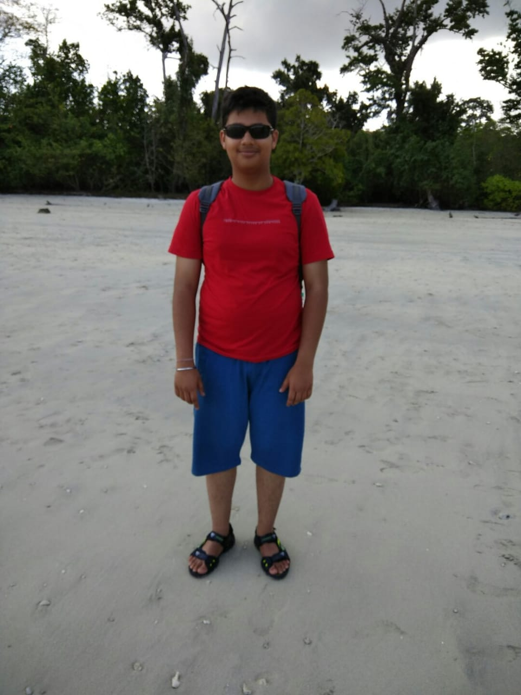
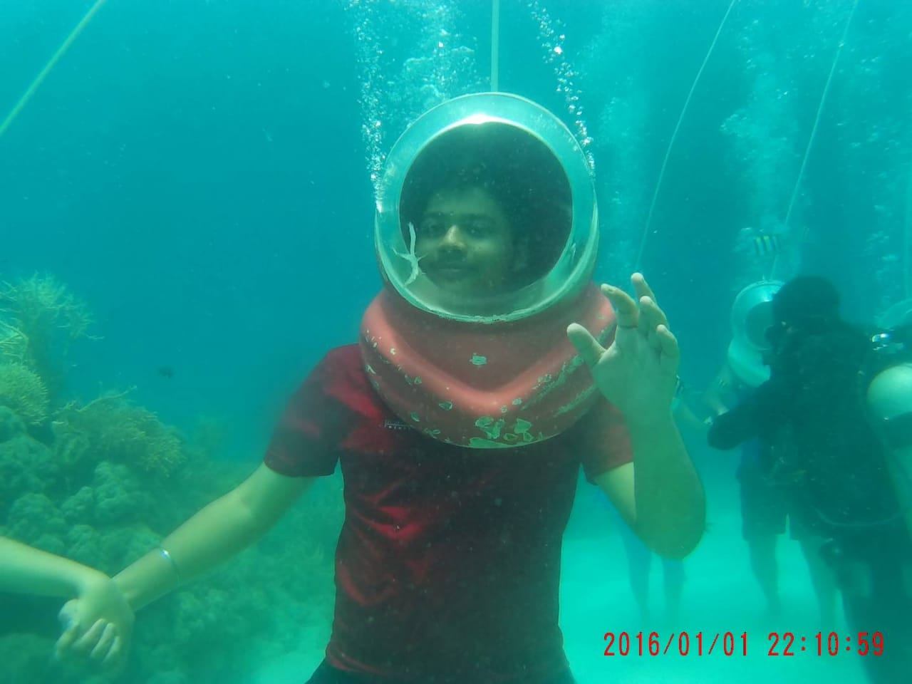

I would like to share some of the experiences I will never forget and memories that I will cherish for the rest of my life.

I feel very lucky to have got a chance to visit God's own country-Kerala. The freshness of air and lush green tea plantations which helped me in establishing a connect with Mother Nature. Spending a night on a houseboat was a thrilling experience. There was nothing but only clear water as far as the eye can see.

The Andamans are another place where I made memories that will last me my lifetime. There I got a chance to do sea walking and snorkelling. These are some activities which I guess everyone should try atleast once in their life!